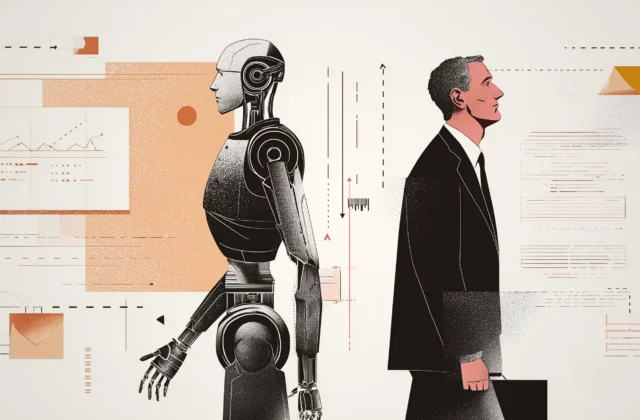

Mercado de Trabalho
A inteligência artificial no mercado de trabalho artístico
A inteligência artificial está transformando o mercado de trabalho artístico, modificando a maneira como designers, ilustradores, músicos e outros profissionais desenvolvem suas obras. Embora ofereça novas ferramentas e oportunidades, também gera desafios, como a redução da demanda por determinados serviços e a discussão sobre direitos autorais. Nesse cenário, o grande desafio é equilibrar o avanço tecnológico com a valorização da criatividade e do trabalho humano.

"A transformação dos empregos, e não sua substituição, é o resultado mais provável da IA generativa.”
Pawel Gmyrek
Pesquisador sênior da Organização Internacional do Trabalho(OIT)